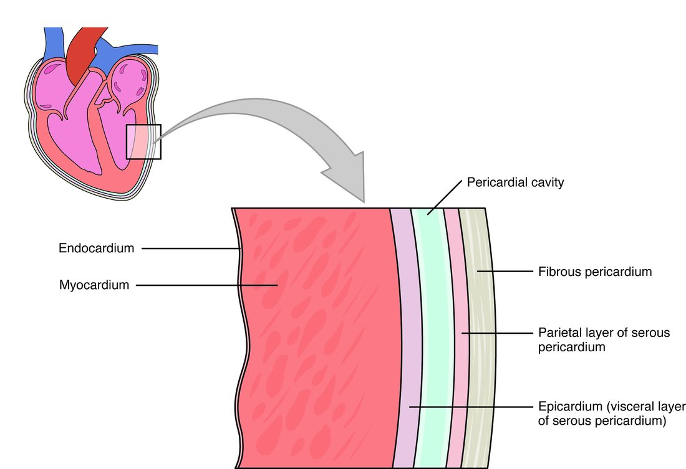

Heart location, pericardium and wall
1Why this matters
Jordan, 24, is brought in with a stab wound just left of his sternum. His blood pressure keeps falling, the veins in his neck bulge, and through a stethoscope his heartbeat sounds faint and distant. No large vessel was cut. The problem is a thin sac around his heart that is filling with blood and cannot stretch.
2What this builds on
3Quick check before you start
1. Which body compartment lies between the two pleural cavities and holds the heart?
- The mediastinum
- The abdominopelvic cavity
- The dorsal body cavity
Show the answer
The mediastinum is the central part of the thoracic cavity, between the two pleural cavities. The heart, the large vessels, the trachea and the esophagus all run through it.
- Correct: The mediastinum:
- The abdominopelvic cavity:
- The dorsal body cavity:
2. A serous membrane has two layers. What lies between them?
- A thick pad of fat
- A thin film of serous fluid
- A layer of skeletal muscle
Show the answer
The parietal layer lines a cavity wall and the visceral layer covers an organ. Between them is a potential space holding a thin film of serous fluid, which lets the layers slide with little friction.
- A thick pad of fat:
- Correct: A thin film of serous fluid:
- A layer of skeletal muscle:
3. Which tissue is built mostly of thick collagen fibers and resists being pulled?
- Simple squamous epithelium
- Dense connective tissue
- Cardiac muscle tissue
Show the answer
Dense connective tissue is packed with collagen fibers, which resist pulling. Simple squamous epithelium is a single thin layer of flat cells, and cardiac muscle tissue contracts rather than resisting stretch.
- Simple squamous epithelium:
- Correct: Dense connective tissue:
- Cardiac muscle tissue:
4Anatomy

With labels hidden, select a box to reveal its label.
5How it works, step by step
- A wound or disease lets blood or fluid collect in the pericardial cavity faster than it drains.The volume of fluid inside the pericardial sac rises.
- The volume inside the sac rises, and the collagen of the fibrous pericardium cannot stretch quickly.Pressure inside the pericardial sac climbs steeply.
- High pressure in the sac presses on the outside of the heart.The thinner-walled parts of the heart, which fill at low pressure, are pressed inward and partly collapse between beats.
- The compressed heart cannot fill fully between beats.Each beat pumps out less blood.
- Each beat pumps out less blood, and blood returning to the heart cannot get in.Blood pressure falls and the neck veins bulge: cardiac tamponade.
6Core concepts
7A common mistake
The wrong idea: The epicardium and the pericardium are two separate coverings, one on top of the other.
What actually happens: The epicardium is the visceral layer of the serous pericardium. It is one sheet of tissue with two names, because it is both the outer layer of the heart wall and the inner layer of the pericardium. Outside it lies the pericardial cavity, then the parietal layer and the fibrous pericardium.
8Check yourself
Anything you miss goes into your review queue.
1. In which compartment of the body does the heart sit?
- The left pleural cavity
- The mediastinum
- The abdominopelvic cavity
- The dorsal body cavity
Show the answer
The heart sits in the mediastinum, the central compartment of the thoracic cavity. It lies between the lungs, behind the sternum, in front of the esophagus and vertebral column, and on the diaphragm.
- The left pleural cavity: The left pleural cavity surrounds the left lung. The heart leans to the left, but it stays in the mediastinum, medial to that cavity.
- Correct: The mediastinum: Correct. The mediastinum lies between the two pleural cavities and holds the heart.
- The abdominopelvic cavity: The abdominopelvic cavity lies below the diaphragm. The heart rests on top of the diaphragm, so it is above this cavity.
- The dorsal body cavity: The dorsal body cavity holds the brain and spinal cord. The heart is in the ventral body cavity, in the thorax.
2. Name the pinned layer: the thin layer that sits directly on the heart muscle, on the inner side of the pericardial cavity.
- Parietal pericardium
- Epicardium
- Endocardium
- Myocardium
Show the answer
The epicardium lies on the outer surface of the myocardium, just inside the pericardial cavity. It is also called the visceral pericardium.
- Parietal pericardium: The parietal pericardium is on the outer side of the pericardial cavity, fused to the fibrous pericardium. The pinned layer is on the inner side.
- Correct: Epicardium: Correct. The layer on the heart muscle, facing the pericardial cavity, is the epicardium (visceral pericardium).
- Endocardium: The endocardium lines the inside of the heart, on the inner surface of the myocardium, far from the pericardial cavity.
- Myocardium: The myocardium is the thick muscle layer itself, not the thin covering on it.
3. A surgeon's needle passes from outside the heart all the way into the blood inside it. Put the layers it crosses in order, from outside to inside.
- Fibrous pericardium
- Parietal pericardium
- Pericardial cavity
- Epicardium (visceral pericardium)
- Myocardium
- Endocardium
Show the answer
Outside to inside: the tough fibrous pericardium, the parietal serous layer fused to it, the fluid film of the pericardial cavity, the epicardium on the heart surface, the thick myocardium, and finally the endocardium lining the inside.
- Correct order: 1. Fibrous pericardium 2. Parietal pericardium 3. Pericardial cavity 4. Epicardium (visceral pericardium) 5. Myocardium 6. Endocardium
4. Jordan, 24, has a stab wound beside his sternum. Blood is collecting around his heart. His blood pressure falls and his neck veins bulge. Which property of which layer explains why a small amount of blood is so dangerous?
- The endocardium tears, so blood inside the heart leaks out through its wall
- The epicardium thickens within minutes and stiffens the heart muscle below it
- The fibrous pericardium cannot stretch quickly, so pressure in the sac rises steeply
- The myocardium relaxes fully, letting the heart balloon outward into the sac
Show the answer
The fibrous pericardium is dense collagen and cannot expand fast. Blood collecting in the pericardial cavity therefore raises the pressure in the sac, which squeezes the heart and keeps it from filling fully between beats. That is cardiac tamponade.
- The endocardium tears, so blood inside the heart leaks out through its wall: A tear in the endocardium alone would not put blood around the heart, and the signs here come from compression from outside, not from a leak inside.
- The epicardium thickens within minutes and stiffens the heart muscle below it: The epicardium does not thicken within minutes, and a stiffer wall is not what compresses the heart in this scenario.
- Correct: The fibrous pericardium cannot stretch quickly, so pressure in the sac rises steeply: Correct. The unyielding fibrous pericardium turns a small added volume into a large rise in pressure.
- The myocardium relaxes fully, letting the heart balloon outward into the sac: If the heart could balloon outward it would fill more, not less. The problem is that the heart is squeezed and cannot expand.
5. Blood leaks quickly into a patient's pericardial cavity. Predict the change in each variable.
| Variable | Change |
|---|---|
| Pressure inside the pericardial sac | — |
| How much blood fills the heart between beats | — |
| Blood pressure | — |
| Bulging of the neck veins | — |
Show the answer
Fluid in an unstretchable sac raises the pressure around the heart. The heart cannot fill, so it pumps out less, blood pressure falls, and blood backs up in the veins.
- Pressure inside the pericardial sac: up. Added volume in a sac whose fibrous layer cannot stretch quickly raises the pressure inside it.
- How much blood fills the heart between beats: down. The high pressure outside the heart squeezes its thin-walled parts, so less blood can flow in between beats.
- Blood pressure: down. A heart that fills less pumps out less blood with each beat, so blood pressure falls.
- Bulging of the neck veins: up. Blood returning to the heart cannot get into the squeezed heart, so it backs up in the large veins, including those in the neck.
6. Patient A develops tamponade after 150 mL of blood enters the pericardial cavity in 10 minutes. Patient B has 900 mL of fluid that built up over two months and has no sign of tamponade. What best explains the difference?
- Patient B's myocardium is weaker, so it is less affected by pressure
- Serous fluid is thinner than blood, so it exerts no pressure
- Patient B's parietal and visceral layers have fused, closing the cavity
- Over weeks the fibrous pericardium enlarges, so pressure stays low
Show the answer
Collagen in the fibrous pericardium cannot stretch fast, so a small, rapid volume causes a steep pressure rise. Over weeks the tissue remodels and the sac enlarges, so a large, slow volume can fit with little rise in pressure. Rate matters more than volume.
- Patient B's myocardium is weaker, so it is less affected by pressure: A weaker muscle would make the heart more vulnerable to outside compression, not less, and nothing in the scenario says the muscle is weak.
- Serous fluid is thinner than blood, so it exerts no pressure: Any fluid in a closed sac exerts pressure. What matters is how much the sac's pressure rises, which depends on how fast it can enlarge.
- Patient B's parietal and visceral layers have fused, closing the cavity: If the layers had fused there would be no cavity for 900 mL of fluid to fill, so this cannot explain Patient B.
- Correct: Over weeks the fibrous pericardium enlarges, so pressure stays low: Correct. Slow accumulation gives the fibrous pericardium time to enlarge; rapid accumulation does not.
9Summary
Your heart sits in the mediastinum, behind the sternum and on the diaphragm, with about two thirds of it left of the midline. The base is the broad upper, back end where the large vessels attach; the apex is the lower tip at the fifth intercostal space on the left. The fibrous pericardium is a tough collagen bag; inside it the serous pericardium folds into a parietal and a visceral layer with serous fluid between them. The heart wall is epicardium (the visceral pericardium), myocardium (the pumping muscle) and endocardium (endothelium). In cardiac tamponade, fluid in the sac cannot stretch the fibrous layer fast enough, so it squeezes the heart and stops it filling.